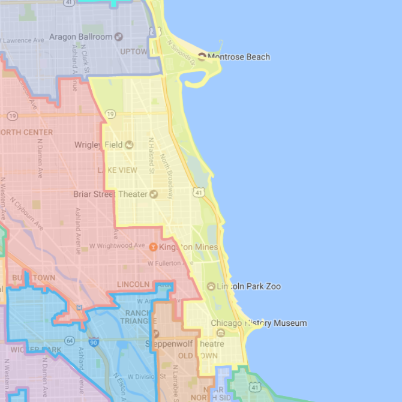

Who is Jesse Garfinkel?
Jesse is a high school economics teacher in Chicago, a resident of Lakeview, and candidate for State Representative in Illinois's 12th District.
He's pledged to take no coroporate donations, and he's committed to fighting for our schools.
Why is Jesse running for state rep?
Jesse’s students used to have access to after-school programs. Then the Rauner budget disaster ended funding for those programs.
These senseless budget cuts drove Jesse to take action. He's running for State Rep because our schools and social services deserve funding and fair treatment.
What is Jesse’s platform?
The heart of Jesse’s platform is funding our schools and fixing our politics.
Jesse is fighting to take special-interest money out of Springfield. He's starting with his own campaign, which won't accept any corporate donations.
Sounds interesting, but I'm not sure yet.
Jesse is running a grass-roots campaign. If you live in the district and have ideas you want to share with the campaign, reach out to Jesse and set up a meeting.
I'm in. I want to help fund this campaign.
Am I in Jesse's district?
Yes, you're in Jesse's district if you live in the yellow district on this map.
When do I get to vote for Jesse?
March 23, 2018.
Add the date to your calendar so you don't forget.

Paid for by Friends of Jesse Garfinkel. A copy of our report filed with the State Board of Elections is (or will be) available on the Board's official website, www.elections.il.gov, or for purchase from the State Board of Elections, Springfield, Illinois.